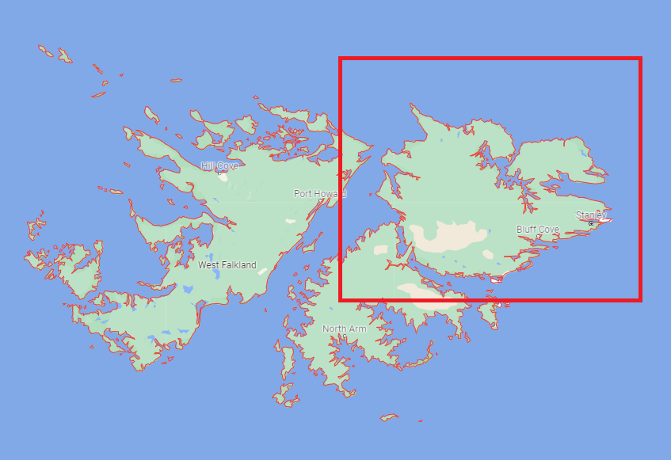
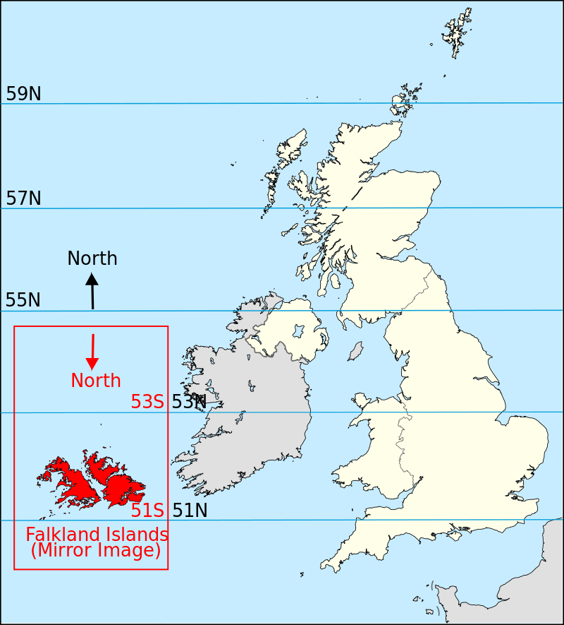
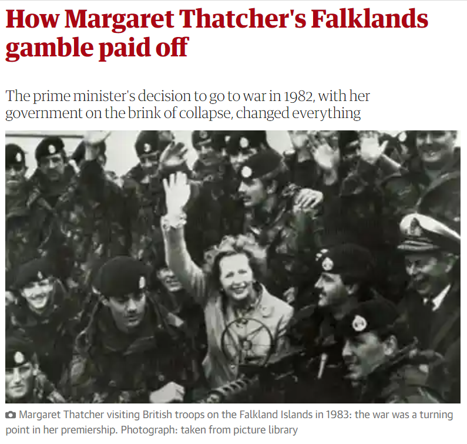
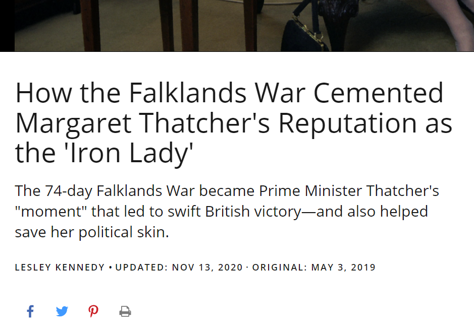
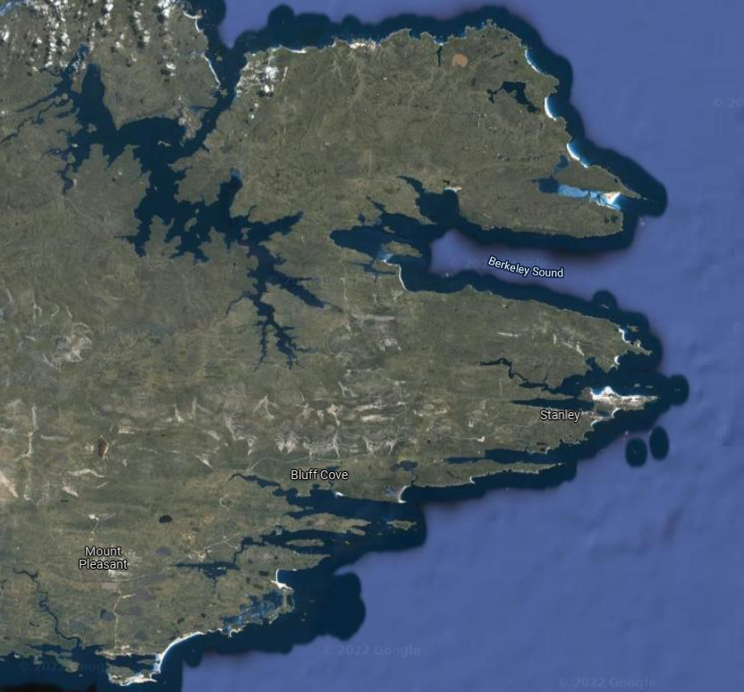
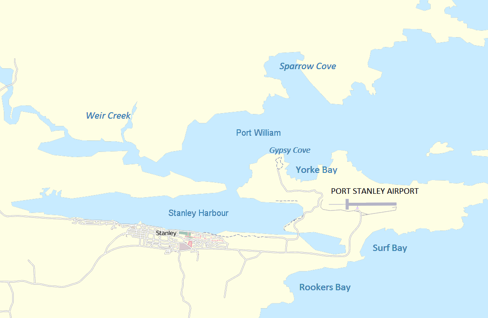
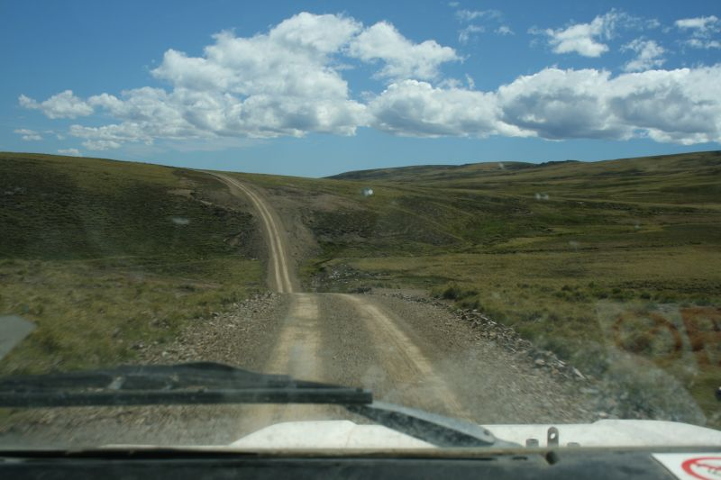
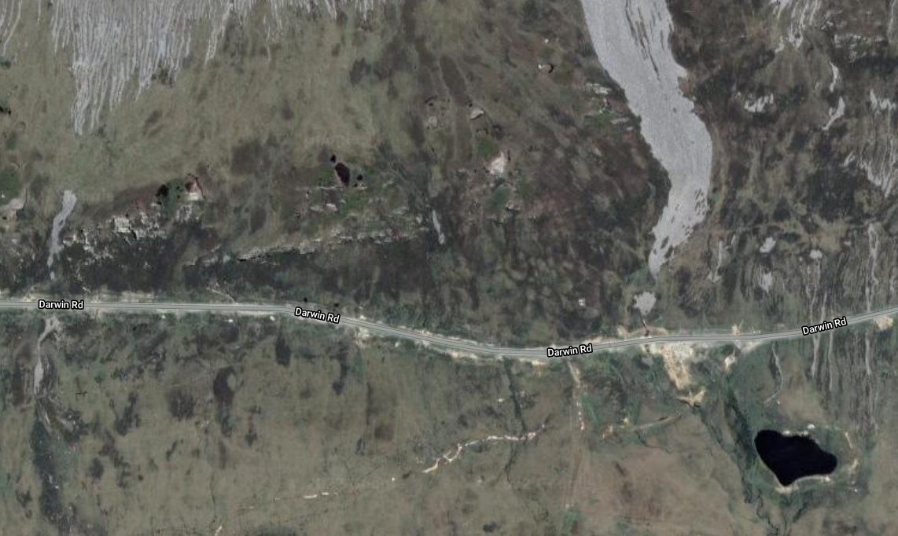
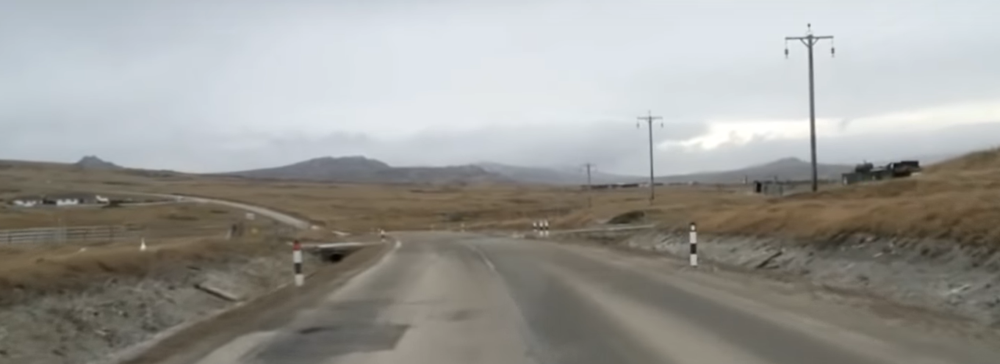

포클랜드 전쟁 잡담 - 아르헨티나 지상군의 고민과 선택
게시: 2022-02-10T06:30:47+09:00
<근데 요즘 왜 자꾸 포클랜드 이야기만 하냐?> 짐작하시다시피 대만에 대한 중국의 침공 가능성 때문. 중국이 대만을 침공한다 안 한다 침공할 수 있다 어림없다 등등 말은 많지만 사실 붙어보기 전에는 아무도 모름. 기술적인 문제의 핵심은 중국이 대만 일대에서 제공권 장악이 가능할 것인가 여부와 중국 해군에게 대만 해협을 가로지른 상륙작전 수행 능력이 있느냐인데, 사실 그것도 당사자인 중국도 모를 거임. 밀덕들이 참고할 수 있는 가장 좋은 사례는 1982년 포클랜드 전쟁. 실은 이때도 고명하신 군사전문가들은 모두 영국 원정군의 패배를 예상. 그러나 다들 아시다시피 결과는 영국군의 완승. 대만 섬의 크기는 36,197 km², 포클랜드 섬의 크기는 12,173 km² (생각보다 큼). 일반적으로 상륙작전에서 교두보 확보 여부 자체는 섬의 크기가 작을 수록 더 어렵다고 여겨지는데, 이유는 상륙에 적절한 해안이 그만큼 제한 적일 것이고 그 부분만 기뢰와 지뢰, 참호와 토치카 등으로 요새화하면 수비군에게 유리하기 때문. 특히 포클랜드 섬은 크게 West 섬과 East 섬으로 나뉘고 그 East 섬도 가운데 지협으로 북섬 남섬으로 나뉘는데 그 중 핵심은 Port Stanley가 있는 East 섬의 북쪽 지역이므로 실제 작전 지역은 대만의 1/3이 아니라 1/12 정도에 해당. 참고로 현재 대만군은 약 18만. 당시 아르헨티나 수비대는 약 1만3천 (+아르헨티나의 해공군 약 1~2천)이므로 작전 면적 대비 현재의 대만 상태와 엇비슷하다고 볼 수 있음. '
 
<아뿔사 잘못 건드렸다> 아르헨티나군의 포클랜드 침공 자체가 순수하게 국민 불만을 외부로 돌리기 위한 졸속 작전이라서 일단 점령만 했지 제대로 방어 태세를 갖추지 않았음. 애초에 '망해가는 영국이 이 쓸모없는 바위섬 되찾겠다고 그 먼거리를 찾아오겠어?'라는 생각. 그러나 아르헨티나 군부가 잘 몰랐던 것은 댓처도 지들과 똑같은 상황이었다는 점. 자유주의 경제 정책을 펼치던 강경보수파 댓처 정권은 당시 국민 지지율 하락으로 위기에 처한 상태였는데 아르헨티나가 포클랜드를 침공한 것은 그야말로 댓처에게 국민 관심사를 외부로 돌릴 절호의 기회를 준 것. 댓처는 그야말로 지옥에서 부처님 만난 것처럼 반가와하며 원정대 파견을 지시. 아르헨티나 군부도 영국의 강경한 태도에 깜짝 놀라 부랴부랴 방어 태세를 갖추었는데, 포클랜드가 아르헨티나 본토에서도 워낙 먼데다 다급하게 준비하려다보니 주요 장비를 모두 항공기로 공수해야 하는 어려움이 있었음. 그나마 Port Stanley의 활주로를 확장하는데 필요한 건설장비 등 여러가지 중장비와 보급품을 포트 스탠리에 선박편으로 보냈는데, 5월 1일 영국 공군 벌컨에 의한 포트 스탠리 폭격이 일어나자 화들짝 놀란 화물선 선장들이 싣고 온 장비를 완전히 하역도 하기 전에 출항해버리는 등 애로사항이 많았음.
 
<포트 스탠리에 집중한 이유> 4월 2일 포클랜드를 점령할 때 아르헨티나 침공군은 불과 600명도 되지 않았으나, 영국 원정군이 온다는 소식에 부랴부랴 증파된 아르헨군은 5월초 거의 1만3천에 달했음. 그러나 대만 섬의 약 1/3 크기인 포클랜드 섬 전체를 그 정도 인원으로 수비하는 것은 불가능. 아르헨군으로서는 선택과 집중이 필요했음. 포트 스탠리가 있는 East 섬은 특이하게 그 중간이 좁은 지협으로 남북으로 나누어진 개미 허리 지형이었음. 그 지협의 폭은 불과 2.2km. 여기엔 Darwin이라는 작은 마을이 있었는데 이 다윈은 진화설의 찰스 다윈의 이름을 따서 지어진 곳 맞음. 그리고 다윈 바로 옆에 Goose Green이라는 임시 활주로가 있었음. 아르헨군으로서는 이 곳만 지키면 East 섬의 남쪽 절반에 대해서는 신경을 쓰지 않아도 되므로 포클랜드 전체의 1/4만 지키면 되는 개이득을 누릴 수 있었음. 아르헨티나군은 이 요충지에 약 1천의 병력을 배치. 그럼에도 불구하고 포클랜드 해안 전체를 지킬 수는 없는 법. 언제나 방어군이 상륙군보다는 유리해보이지만 그건 상륙지점이 어디인지 미리 알 수 있는 경우 한정임. 지켜야 할 해안선은 긴데, 거기에 병력을 분산시켜 주욱 늘어 세웠다가는 한 곳에 집중하여 상륙하는 상륙군에게 각개격파를 당할 뿐. 따라서 아르헨군은 포클랜드의 수도이자 유일한 제대로 된 공항과 항구가 있는 인구 집중지 포트 스탠리와 그 인근에 병력을 집중하기로 결정.
 
<아르헨티나군의 방어 태세> 아르헨티나군이 포클랜드 섬의 해안 전체를 지킬 수는 없는 법. 지켜야 할 해안선은 긴데, 거기에 병력을 분산시켜 주욱 늘어 세웠다가는 한 곳에 집중하여 상륙하는 상륙군에게 각개격파를 당할 뿐. 보통 이런 경우 방어군이 취할 방법은 2종류. 하나는 중앙에 기동성 있는 병력을 집중한 뒤, 상륙지점이 알려지면 즉각 달려가서 상륙을 완료하기 전에 몰아내는 것. 1799년 이집트 아부키르 만에 상륙한 오스만 투르크군을 나폴레옹이 격파한 사례가 바로 그것. 그러나 이건 기동성이 확보될 때의 이야기. 다른 하나는 지켜야 할 도시나 항구 등의 요충지만 틀어쥐는 정적인 방법. 아르헨군이 지켜야 할 포클랜드의 이스트 섬은 척박한 암석 지대로서, 1982년 당시엔 포트 스탠리 시내를 제외하고는 자연 발생적인 트랙 외에는 포장도로가 아예 없었음. 그렇다고 충분한 수의 헬리콥터 등을 이용해 기동성을 갖추기도 어려운 상황. 따라서 아르헨군은 포클랜드의 수도이자 유일한 제대로 된 공항과 항구가 있는 인구 집중지 포트 스탠리와 그 인근에 병력을 집중하기로 결정.
** 아래 사진1이 포클랜드의 전형적인 자연발생적 트랙. ** 사진2는 2000년 이후에 놓인 포클랜드의 도로 중 하나인 Darwin road.
 
<도로 주변의 참호... 혹시?> 전쟁이 끝난 이후 놓인 Darwin road는 포트 스탠리와 지협의 다윈 사이를 연결하는 도로. 그런데 이 도로 일부 구역에서는 도로 양옆에 깊은 참호가 파여져 있음. 혹시 이 참호는 1982년 전쟁에서의 경험과 상관있는 것일까? 아님. 그냥 배수로로 파놓은 것인데, 워낙 깊게 파놓아 자칫하면 차가 빠져서 빠져나올 수 없다고. 비가 그리 많이 오지도 않는 지역에 왜 이렇게 깊은 도랑을 파놓았을까? 역시 방어태세를 위한 것일까? 아님. 당시 도로 공사 시행사에서, 연간 강수량을 월간 강수량 수치로 잘못 이해하고 이렇게 깊게 팠다고 함. 역시 영국이 하면 다르다!
